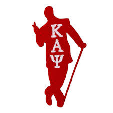
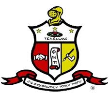

The Road to Kappa Land is a journey defined by growth, excellence, and brotherhood. It begins with a desire to join a legacy of men committed to achievement and service. The path requires discipline, leadership, and a deep respect for tradition. Each step challenges you to rise higher and live with purpose.
As you walk this road, you’re shaped into more than just a member — you become a leader. The experience builds character, unity, and a sense of lifelong brotherhood. It teaches the value of perseverance and community impact. Kappa Land is not just a goal; it’s a lifestyle rooted in excellence.
 | Founder | Number |
|---|---|
| Elder Watson Diggs | 1 |
| Byron Kenneth Armstrong | 2 |
| Ezra Dee Alexander | 3 |
Learn more: